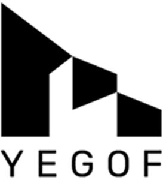

Trade Mark Journal No.2025/043 24 October 2025
WO0000001880512 (24,25,35)
Office of origin: Italy
Date of International Registration:15 July 2025
Date of designation in the UK:
15 July 2025

FIGURATIVE TRADEMARK CONTAINING THE MEANINGLESS FANCY WORDING “YEGOF”.
International priority date claimed: 25 June 2025
(Italy)
(302025000102550)
- Class 24
- Textiles and substitutes for textiles, textile goods and substitutes for textile goods; fabrics for textile use, elastic woven fabrics, elastic yarn mixed fabrics, denim fabric, polyester fabrics, nylon fabric, fabrics made from synthetic threads, breathable waterproof fabrics, flame resistant fabrics, lingerie fabrics, textile fabrics for use in the manufacture of sportswear, elastic fabrics for clothing, jersey [fabrics] for clothing, coated fabrics for use in the manufacture of rainwear, coverings for furniture, textiles for furnishing, fabrics for footwear, wall hangings, hangings of textiles, upholstered coverings [fabric upholstery] for walls, household linen, sofa covers, sofa blankets, bed linen and bed blankets, bed linen made of non-woven textile material, bedspreads, bathroom linen, bathroom towels of textile, kitchen linen and table linen, curtains, curtains of textile or plastic.
- Class 25
- Clothing, coats, raincoats, overcoats, parkas, jackets, heavy jackets, down jackets, hooded jackets, suits, dresses, trousers, shorts, jeans, skirts, shirts, jerseys, T-shirts, polo shirts, tops [clothing], sweat shirts, sweaters, cardigans, jumpers, vests, tracksuit, overalls, bathing suits, beach coverups, beach clothes, sportswear, golf clothing, other than gloves, cyclists' clothing, ski wear, outerwear, thermally insulated clothing, casualwear, clothing of leather, underwear, brassieres, boxer shorts, underpants, vest tops, leotards, dressing gowns, nighties, pyjamas, chemises, bath robes, bathing caps, neckties, foulards [clothing articles], gloves, scarves, neck scarves [mufflers], neck tubes, muffs [clothing], stockings, socks, tights, belts, footwear, shoes, sneakers, gymnastic shoes, sporting shoes, boots, sandals, slippers, headgear, hats, berets, caps; parts of clothing, namely, dress shields, heelpieces for stockings, pockets for clothing, ready-made linings [parts of clothing], shirt fronts, shirt yokes; parts of footwear, namely, boot uppers, fittings of metal for shoes and boots, footwear uppers, heelpieces for boots, heels, inner soles, iron fittings for boots, iron fittings for shoes, non-slipping devices for boots and shoes, soles for footwear, studs for football boots [shoes], tips for footwear, welts for boots and shoes; parts of headgear, namely, cap peaks, hat frames [skeletons], visors [hatmaking].
- Class 35
- Advertising; business management assistance, organization and administration; office functions; organization of exhibitions for commercial or advertising purposes; arranging of virtual reality exhibitions for commercial or advertising purposes; sales promotion for others; virtual reality sales promotion for others; wholesale and retail sale services, mail order retail sale and retail sale services via the Internet relating to textiles, textile goods, textiles for clothing, upholstery fabrics, textiles for footwear, clothing, footwear, headgear; online retail sale services in digital and virtual environments relating to digital and virtual goods, namely, virtual textiles, virtual textile goods, virtual textiles for clothing, virtual upholstery fabrics, virtual textiles for footwear, virtual clothing, virtual footwear, virtual headgear; online retail sales services relating to downloadable digital files authenticated by non-fungible token [NFT] in relation to drawings, illustrations, textiles, textile goods, clothing, footwear, headgear, yarns, threads, raw fibrous textile material; procurement services for others [purchasing goods and services for other businesses]; procurement services for others [purchasing goods and services for other businesses] relating to textiles, textile goods, textiles for clothing, upholstery fabrics, textiles for footwear, clothing, footwear, headgear; presentation of goods on communication media for retail purposes; presentation of goods on communication media for retail purposes in relation to textiles, textile goods, textiles for clothing, upholstery fabrics, textiles for footwear, clothing, footwear, headgear; wholesale and retail sale services in relation to woolen fabrics and bed linen; wholesale and retail sale services in relation clothing; wholesale and retail sale services in relation to footwear.
CARVICO S.P.A.
Representative: RACHELI S.R.L., Viale San Michele del Carso, 4, I-20144 Milano (MI), ITALY